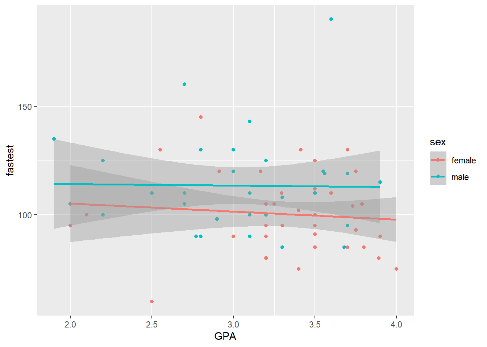
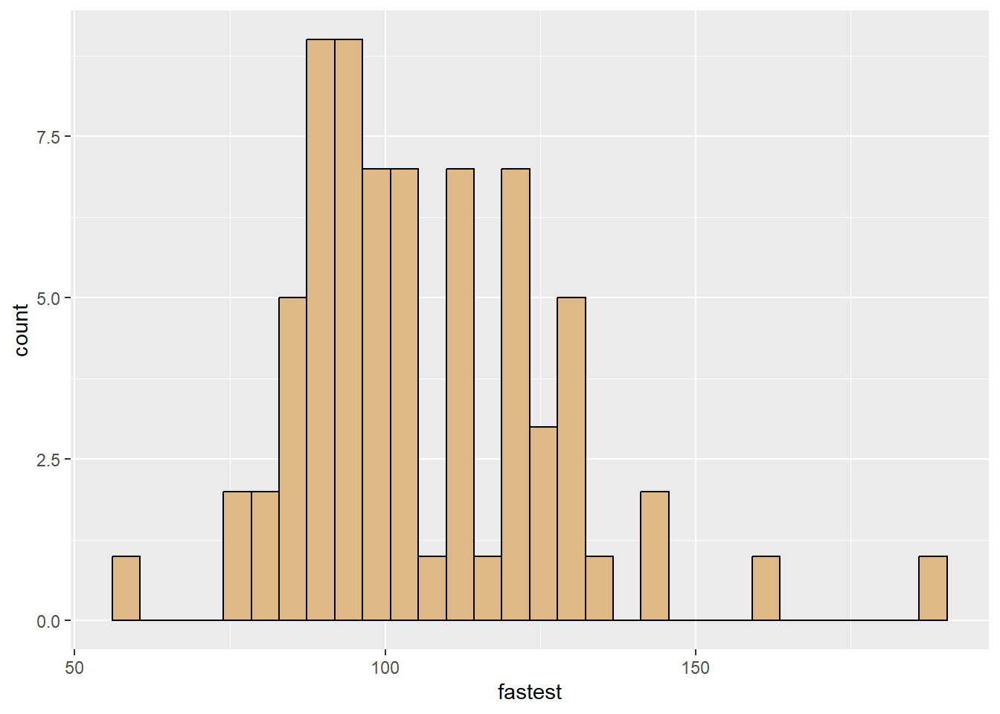
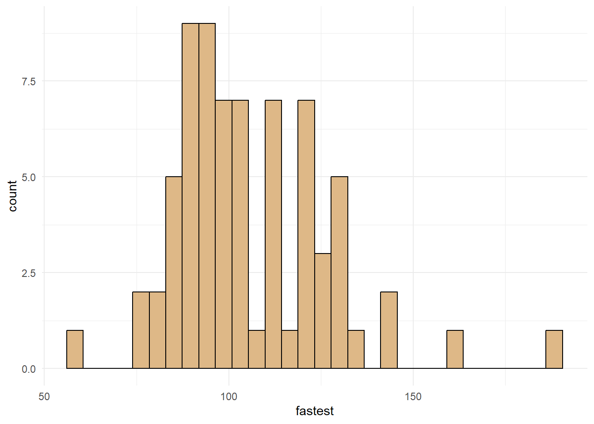
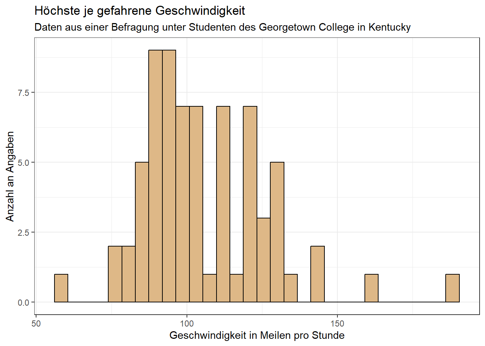
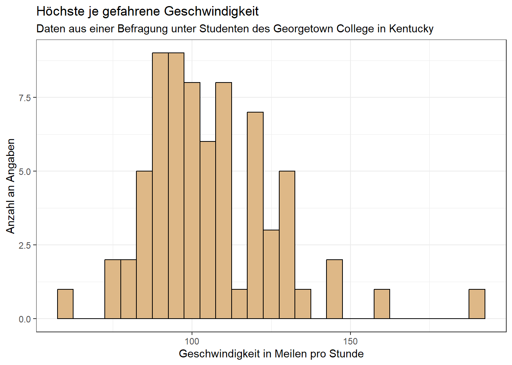

# install.packages("tigerstats")2.3 Visualisierung mit Grafiken
Grundlagen
Um uns einen Überblick über die Daten zu verschaffen und einfacher Zusammenhänge zwischen Variablen zu erhalten, ist es oft sinnvoll, Diagramme zu erstellen. R bietet dafür zahlreiche Möglichkeiten, die sehr flexibel genutzt werden können.
In dieser Einheit werden wir mit dem Datensatz m111survey aus dem tigerstats-Paket die Grundlagen für eine solche Visualisierung erarbeiten. Dieser Datensatz ist das Ergebnis einer Umfrage unter 71 Studierenden des Georgetown College in Kentucky.
Zunächst laden wir diesen Datensatz in unsere Umgebung.
Mithilfe von ?m111survey können wir uns ansehen, welche Bedeutung die Variablen haben. Man könnte zum Beispiel annehmen, dass Studenten mit niedrigerem Notendurchschnitt eher dazu neigen, schnell zu fahren. Veranschaulichen wir diesen Zusammenhang in einem Diagramm:
m111survey %>%
ggplot(aes(x = GPA, y = fastest)) +
geom_point()Warning: Removed 1 rows containing missing values (`geom_point()`).
Dieses Diagramm ist ein sogenannter Scatterplot bzw. ein Streudiagramm. Der Aufbau eines solchen Diagramms in R ist wie folgt:
Man könnte denken, dass diese Annahme tatsächlich stimmt. Legen wir mal eine “Ausgleichsgerade” durch die Punkte:
m111survey %>%
ggplot(aes(x = GPA, y = fastest)) +
geom_point() +
geom_smooth(method = "lm") # lm steht für "Linear Model"`geom_smooth()` using formula = 'y ~ x'Warning: Removed 1 rows containing non-finite values (`stat_smooth()`).Warning: Removed 1 rows containing missing values (`geom_point()`).
Der graue Balken in diesem Diagramm beschreibt im Grunde die Unsicherheit in unserem Modell. Wir sehen, dass er so breit ist, dass die Enden sich jeweils überlappen. Daher können wir nicht darauf schließen, dass der Notenschnitt einen Einfluss auf die höchste je gefahrene Geschwindigkeit hat.
Wir können aber mehr aus den Daten holen. Schauen wir uns zum Beispiel an, wie Frauen im Vergleich zu Männern in der Umfrage antworten:
m111survey %>%
ggplot(aes(x = GPA, y = fastest, color = sex)) +
geom_point() +
geom_smooth(method = "lm")`geom_smooth()` using formula = 'y ~ x'Warning: Removed 1 rows containing non-finite values (`stat_smooth()`).Warning: Removed 1 rows containing missing values (`geom_point()`).
Wir sehen: Frauen haben tendenziell langsamere Höchstgeschwindigkeiten als Männer, aber auch hier überlappen sich die Balken.
Ein weiterer wichtiger Diagrammtyp ist das Histogramm. Es gibt an, wie oft ein bestimmtes “Level” einer Variable in den Daten vorkommt, zum Beispiel wie folgt:
m111survey %>%
ggplot(aes(x = fastest)) +
geom_histogram(fill = "burlywood", color = "black")`stat_bin()` using `bins = 30`. Pick better value with `binwidth`.
Ähnliches kann durch das Layer geom_density() erreicht werden. Dieses gibt nicht die Anzahl, sondern die Verteilung der Geschwindigkeiten an.
m111survey %>%
ggplot(aes(x = fastest)) +
geom_density(fill = "burlywood")
Erweiterungen
Themes
Themes bestimmen das Aussehen unseres Diagramms, vor allem den Hintergrund und die Markierungen. Standardmäßig haben Diagramme einen grauen Hintergrund mit weißen Gitternetzlinien. Nutzen wir bei unserem Histogramm theme_minimal() als Theme, sieht das folgendermaßen aus:
m111survey %>%
ggplot(aes(x = fastest)) +
geom_histogram(fill = "burlywood", color = "black") +
theme_minimal()`stat_bin()` using `bins = 30`. Pick better value with `binwidth`.
Das gleiche Diagramm mit dem theme_bw() sieht so aus:
m111survey %>%
ggplot(aes(x = fastest)) +
geom_histogram(fill = "burlywood", color = "black") +
theme_bw()`stat_bin()` using `bins = 30`. Pick better value with `binwidth`.Es gibt noch zahlreiche weitere Themes, die man mit theme_...() auswählen kann.
Titel und Beschriftungen
So, wie die Diagramme jetzt aussehen, sind sie etwas kahl. Wenn wir sie später irgendwo benutzen wollen, sollten wir sie so formatieren, dass man ihnen den Sinn entnehmen kann. Das können wir mithilfe von Titeln und Beschriftungen erreichen.
Um einen Titel hinzuzufügen, gibt es das Layer ggtitle(). Es wird folgendermaßen verwendet:
m111survey %>%
ggplot(aes(x = fastest)) +
geom_histogram(fill = "burlywood", color = "black") +
theme_bw() +
ggtitle("Höchste je gefahrene Geschwindigkeit",
"Daten aus einer Befragung unter Studenten des Georgetown College in Kentucky")`stat_bin()` using `bins = 30`. Pick better value with `binwidth`.
Nun sind die Achsenbeschriftungen aber auch noch auf Englisch und nicht sehr deskriptiv. Wir können sie mithilfe von xlab() und ylab() ändern:
m111survey %>%
ggplot(aes(x = fastest)) +
geom_histogram(fill = "burlywood", color = "black") +
theme_bw() +
ggtitle("Höchste je gefahrene Geschwindigkeit",
"Daten aus einer Befragung unter Studenten des Georgetown College in Kentucky") +
xlab("Geschwindigkeit in Meilen pro Stunde") +
ylab("Anzahl an Angaben")`stat_bin()` using `bins = 30`. Pick better value with `binwidth`.
Wie wir in der Ausgabe sehen, sollte man auch noch die Breite der Säulen festlegen. Das sollte immer im Kontext der Daten erfolgen: Eine Säulenbreite von 50 würde die Daten unzureichend darstellen, während eine Säulenbreite von 1 zu fein ist (eventuell mehrmals nur eine Angabe pro Säule). Eine Säulenbreite von 5 ist wahrscheinlich angemessen:
m111survey %>%
ggplot(aes(x = fastest)) +
geom_histogram(fill = "burlywood", color = "black", binwidth = 5) +
theme_bw() +
ggtitle("Höchste je gefahrene Geschwindigkeit",
"Daten aus einer Befragung unter Studenten des Georgetown College in Kentucky") +
xlab("Geschwindigkeit in Meilen pro Stunde") +
ylab("Anzahl an Angaben")
Achsenskalierung
Wir sehen im Diagramm oben, dass wir nur zwei x-Achsen-Markierungen haben, bei 100 und 150 Meilen pro Stunde. Das ist aber relativ wenig. Wir können mehr Markierungen hinzufügen, indem wir festlegen, wo sie zu sehen sein sollen. Ebenso ist unschön, dass wir auf der y-Achse keine ganzen Zahlen haben, obwohl wir nur zählen, wie häufig (ganze Zahlen) die angegebene Geschwindigkeit genannt wird. Auch hier ändern wir die Skala:
m111survey %>%
ggplot(aes(x = fastest)) +
geom_histogram(fill = "burlywood", color = "black", binwidth = 5) +
theme_bw() +
ggtitle("Höchste je gefahrene Geschwindigkeit",
"Daten aus einer Befragung unter Studenten des Georgetown College in Kentucky") +
xlab("Geschwindigkeit in Meilen pro Stunde") +
ylab("Anzahl an Angaben") +
scale_x_continuous(breaks = c(75, 100, 125, 150, 175)) +
scale_y_continuous(breaks = c(0, 2, 4, 6, 8))
Weitere Ressourcen
Welche Mittel man für ein schönes Diagramm braucht, hängt sehr davon ab, welche Art von Daten man hat und was man darstellen möchte. In vielen Fällen ist es das Einfachste, nach den Layern zu googeln, die man benutzen will. Hier sind noch einige weitere Ressourcen, in denen man nachschlagen kann: